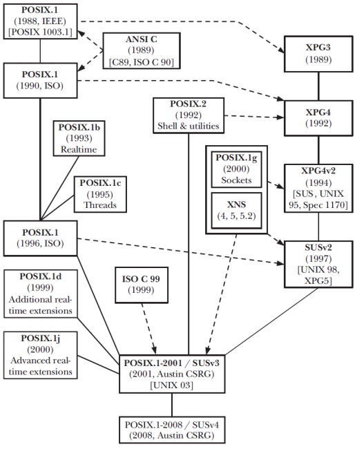

Tema 1: Interfaz de un Sistema Operativo
Índice
Introducción
El Sistema Operativo es un software que gestiona los recursos (procesos, memoria y E/S) del computador.
El kernel es el núcleo del sistema y el encargado de:
Gestionar las credenciales de procesos (Identificadores y permisos)
La planificación de procesos (Preemptive multitasking)
Gestión de memoria (Dynamic memory/Virtual memory)
Administración de usuario y grupos (Virtual private computer)
Acceso a dispositivos de E/S
Networking
System Call Application Programming Interface (API)
Junto al kernel hay un conjunto de herramientas que lo acompañan, es el caso del shell, la interfaz gráfica, los editores y otras utilidades.
El intérprete de comandos o shell
El shell es un programa informático que procesa las líneas de órdenes tecleadas por el usuario, ejecutando cada comando mediante la System Call API del Sistema Operativo.
Dentro del shell encontramos comandos internos (help comando) y externos (man comando). Existen diferentes intérpretes de comandos, siendo los más comunes:
Bourne shell (sh)
C shell (csh)
Korn shell (ksh)
Bourne again shell (bash)
El shell está estandarizado (POSIX.2 o 1003.2-1992), tanto ksh como bash se ajustan a POSIX.2, pero también incluyen algunas extensiones no portables.
El shell por defecto depende del sistema operativo, podemos averiguar el que estamos usando haciendo: $ echo $SHELL
Estándares
Lenguaje C
En el año 1989, ANSI aprobó el primer estándar de C (C89); en 1990, ISO/IEC lo aprobó también (C90). Posteriormente, el estándar de C sufrió tres revisiones (C95, C99 y C11), también hubo una revisión C17/C18 que corrigió algunos errores de la C11.
El estándar de C incluye no solo la sintaxis y la semántica de C, sino también su biblioteca estándar (The Standard C Library).
UNIX y Linux
De 1969 a 1974 se desarrollaron las cinco primeras versiones de UNIX en AT&T, y en 1975 AT&T liberó el código fuente de la sexta. Durante los 80, la Universidad de Berkeley liberó varias versiones de BDS (Berkeley Software Dirstribution) basadas en el UNIX de AT&T (FreeBSD, NetBSD y OpenBSD). En paralelo, AT&T había comenzado la comercialización de UNIX como System V (de SVr1 a SVr4).
El 1989 arranca el proyecto GNU de la mano de Richard Stallman, su objetivo era el de crear una implementación libre de UNIX con aplicaciones y utilidades con licencia GPL como gcc, gdb o make. Ante la ausencia de un kernel libre maduro, GNU adopta el núcleo Linux.
En la actualidad siguen comercializándose versiones de UNIX como Solaris (previamente SunOS), basado en SVr4 y Mac OS X, basado en Mach/FreeBSD.
En 1994 se libera la versión 1.0 de Linux con licencia GPL.
Hoy en día, el término genérico Linux se refiere a la combinación del kernel con bibliotecas, herramientas e instalación (distribucione).
Relación entre los estándares C y UNIX
POSIX es una familia de estándares para sistemas operativos de IEEE que regula las interfaces, pero no las implementaciones.
Llamadas al sistema y funciones de biblioteca
Llamadas al sistema
Las llamadas al sistema o syscalls permiten a un proceso de usuario solicitar servicios de diferente naturaleza al Sistema Operativo.
La mayoría de las llamadas al sistema están encapsuladas en funciones de biblioteca que suelen tener el mismo nombre que la syscall correspondiente.
Cada llamada al sistema implica un cambio de modo usuario a modo kernel, se identifica mediante un número único y puede requerir un conjunto de argumentos.
Las llamadas son extremadamente importantes por ser un recurso imprescindible, gracias a ellas podemos entender qué hace un programa, cómo lo hace y cuán útil es. Además, determinan la portabilidad de un programa (todos los ejemplos que incluyen la feature test macro _POSIX_C_SOURCE 200809L son portables). Por lo tanto, son parte esencial de la seguridad del sistema.
Nota: Con strace -c programa podremos ver las estadísticas de las llamadas al sistema que realiza programa.
Modo usuario y modo kernel
Diapositiva 16.